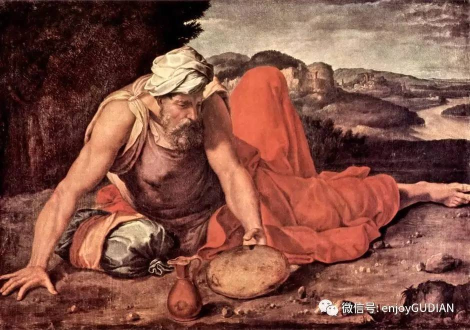
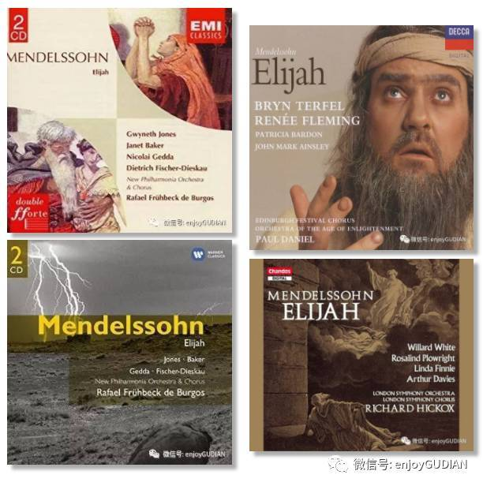
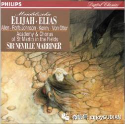

1611 Cast Thy Burden upon the Lord 將你的重擔卸給主
Cast thy burden upon the Lord, And he shall sustain thee
Tune: BIRMINGHAM (Mendelssohn) |
Cast Thy Burden upon the Lord
|
Cast thy burden upon the Lord,
who ever sustains thee,
who never will suffer the righteous to fall,
and is at thy right hand.
Thy mercy, Lord, is great,
and far above the heav’ns.
Let none be made ashamed,
that wait upon thee. |
歌詞:
將你的重擔都卸給主，
祂必定撫養你，
祂必保守你，
使你永不動搖，
祂常在你右邊。
我主慈愛無邊，
深遠超過諸天，
在你面前等候的，
必永不蒙羞。 |

http://sooopu.com/html/300/300946.html

|
| |
|
帝(Cast Thy Burden upon the Lord) by SMILE
CHOIR @ mbc
https://youtu.be/kzPG59I6eoc
教會聖詩 41 將你的重擔卸給主 Cast Thy Burden upon the Lord 詞 Based on Psalms 55:22 曲 Felix
Mendelssohn 合唱 the Plymouth Choir, First Plymouth Church, Lincoln, Nebraska
https://youtu.be/AmNFZND6X98
Cast Thy Burden Upon The Lord (Choir) - Christian Hymn / Lyrics
https://youtu.be/OmpoCjVIhQA
Cast Thy Burden Upon the Lord 將你的重擔卸給主 _ 台北靈糧堂雅音詩班
http://www.hymncompanions.org/Oct/16/stream.php
將你的重擔卸給主 Cast Thy Burden upon the Lord
將你的重擔都卸給主，祂必定撫養你，
祂必保守你，使你永不動搖，祂常在你右邊。
我主慈愛無邊，深遠超過諸天，
在你面前等候的，必永不蒙羞。
 (請點耳機收聽)
(請點耳機收聽)
塵世旅途中，各樣重擔累累，常把人壓得喘不過氣來。 基督徒明知主可代我們背負，卻又往往無法釋手。 聖經一再提示我們要卸下重擔，讓我們銘記。
這不單是一個信心的操練，也是拒絕憂慮，使心靈喜樂的良方。
這首詩歌選自神劇「以利亞」（Elijah）。 歌詞取自詩篇55:22「你要把你的重擔卸給耶和華……」。
該劇是孟德爾頌（Felix Mendelssohn, 1809-1847）短暫的一生中最偉大的作品。
孟德爾頌出生在德國漢堡（Hamburg）。 他的祖父是德國最著名的哲學大師孟摩西（Moses
Mendelssohn），外祖父和父親都是銀行家，母親是才女，諳德、法、英、意等國文字，是藝術家也是音樂家。孟德爾頌的父母是信義會的基督徒，雖然家境富裕，生活卻樸實。
他母親悉心調教四個兒女，並請多位名師作家庭教師；孩子們清晨五時起身，早餐後，就開始一日的作業。 孟德爾頌和他姊姊學鋼琴和作曲，妹妹學聲樂，弟弟學低音大提琴。
孟德爾頌在九歲時就以神童之名公開演奏鋼琴，十歲時加入成人合唱團的男高音，而唱他的作曲詩篇第十九篇。
十二歲時已完成五部交響曲，十七歲時作成「仲夏夜之夢」（Midsummer Night's Dream）的序曲，舉世聞名的「婚禮進行曲」（Wedding
March）即出自該劇。孟德爾頌以「每日一行」（No day without a line）為座右銘。
他的作品共有四十四巨冊，原稿都保存在柏林的國家圖書館。 他的佳作，多數是聖樂。 「以利亞」完成於1846年，同年八月在音樂節時公演，他親自指揮，因而積勞成疾；但他扶病繼續創作一歌劇和一神劇。
翌年夏，接獲姊姊去世的噩耗，傷心過度，不久也相繼而逝 。
孟德爾頌在柏林組織一全德國教會中最傑出的詩班。 他又創辦了規模宏大的來比錫音樂院。
他曾訪英國十一次，備受歡迎，當地的音樂家，維多利亞女王和民眾一齊向他喝彩致敬。
中英文聖詩集參考
英
文歌名 Cast
Thy Burden upon the Lord
教會聖詩 41
歡欣讚美 229
聖徒詩集 501
世紀讚頌 553
https://www.umcdiscipleship.org/resources/cast-thy-burden-upon-the-lord
Cast Thy Burden Upon the Lord
By Felix Mendelssohn, 1809-1847
Scripture: Psalm 55:22
Topic: Burdens, mercy, shame, suffering, sustaining, Mendelssohn, Elijah
This is an SATB choir setting from Mendelssohn's 1846 oratorio, Elijah.
Cast Thy Burden Upon the Lord (Sibelius format)
Cast Thy Burden Upon the Lord (pdf)
https://hymnary.org/text/cast_thy_burden_on_the_lord_only_lean_up
Notes
Cast thy burden on
the Lord. [Strength in God.] This hymn appeared
anonymously (in common with all the hymns therein) in Rowland Hill's Psalms
and Hymns, &c, 1st edition, 1783, No. 64, in 5 stanzas of 4 lines, and
entitled, "Encouragement for the Weak." In this form it passed into several
collections to 1853, when it appeared in the Leeds Hymn Book, No.
571, rewritten by G. Rawson. As the hymn in both forms is in common use, and
the latter somewhat extensively, we append the two.
R. Hill's text,
1783.
Cast thy burden on
the Lord,
Only lean upon His word;
Thou wilt soon have cause to bless
His eternal faithfulness.
He sustains thee by His
hand;
He enables thee to stand;
Those whom Jesus once hath lov'd,
From His grace are never mov'd.
Human counsels come to
nought;
That shall stand which God hath wrought;
His compassion, love and power
Are the same for evermore.
Heaven and earth may
pass away,
God's free grace shall not
He hath promised to fulfil
All the pleasure of His will.
Jesus, Guardian of Thy
flock,
Be Thyself our constant Rock;
Make us by Thy powerful hand
Strong as Sion's mountain stand.
G. Rawson's text,
1853.
Cast thy burden on
the Lord,
Only lean upon His word;
Thou shalt soon find cause to bless
His eternal faithfulness.
Wouldst thou know
thyself a child?
Is thy proud heart reconciled?
Is it humbled to the dust,
Full of awe and full of trust?
Dost thou not rejoice
with fear?
Never be high-minded here;
Heed not what the tempter saith,
Cling to Christ in lowly faith.
Fear not, then, in every
storm
There shall come the Master's form;
Cheering voice and present aid—
"It is I, be not afraid."
He will hold thee
with His hand,
And enable thee to stand;
His compassion, love, and power
Are the same for evermore.
By comparing the portions
in italics in each of the above it will be seen, stanzas i. and v. of the
1853 text are from Rowland Hill, 1783; and stanzas ii., iii. and iv. are by
G. Rawson. In some hymnals, specially in America, alterations are introduced
into the 1853 text, as for instance in the Hymns and Songs of Praise,
N. Y., 1874, and others. The extent of these and other alterations may be
gathered by comparing any given text with those above.
--John Julian, Dictionary
of Hymnology (1907)

https://wordwisehymns.com/2017/04/05/cast-thy-burden-upon-the-lord/
Words: Psalm 55:22 and 16:8, adapted by Julius Schubring (1806-1889), a pastor
friend of Mendelssohn’s, for the composer’s oratorio, Elijah, for which it was
translated into English by another friend of the composer’s, William Bartholemew
Music: Felix Mendelssohn (b. Feb. 3, 1809; d. Nov. 9, 1847)
Links:
Wordwise Hymns (Felix Mendelssohn)
The Cyber Hymnal (Felix Mendelssohn)
Hymnary.org
Note: Though Felix Mendelssohn died of a stroke before his thirty-ninth
birthday, he has given us a wide range of beautiful music. The oratorio Elijah
is a true masterpiece.I encourage you to listen to a recording of it–or better
still attend a performance of it if you can. It was first performed in
Birmingham, England, August 26th, 1846. The composer had written to Julius
Schubring who worked on the original text:
“The personages should act and speak like living beings–for heaven’s sake let
them not be a musical picture, but a real world, such as you find in every
chapter of the Old Testament.”
There is, in the Cyber Hymnal page on the composer, a wonderful story about him,
which is given a striking and practical spiritual application. Worth reading.
Our traditional hymns and gospel songs were written over a period of twenty
centuries, by hundreds of men and women, who represent a broad spectrum of
religious beliefs.
During that long period it has not been unusual for the world’s greatest
classical composers to contribute to the music used with our hymns. In some
cases, one of their compositions has been adapted to make a hymn tune. Other
times they wrote the melody specifically for the purpose. While it is going too
far to suggest that these men were all evangelical, born again Christians, each
had a strong sense of the presence and power of God in the world.
Among the masters of music whose names are found in many of our hymn books are:
Johann Sebastian Bach (1685-1750), George Frederick Handel (1685-1759), Franz
Joseph Haydn (1737-1806), Wolfgang Amadeus Mozart (1756-1791), Ludwig van
Beethoven (1770-1827), and Felix Mendelssohn (1809-1847).
Several of these composers also created what are called oratorios. An oratorio
is a long musical composition, usually based on Scripture or a religious theme,
and involving solo voices, a choir, and an orchestra. An oratorio differs from
an opera in that it’s performed without action, costumes, or scenery. Handel’s
Messiah from 1741 is the most familiar and perhaps the most sublime example.
Over more than two hours, it covers the life of Christ with moving and memorable
music.
The greatest oratorio of the nineteenth century, Elijah, was created by Felix
Mendelssohn. He was the son of wealthy Jewish parents who had put their faith in
Christ, and Felix himself was a dedicated Christian. He married Cecile, a
pastor’s daughter and a great woman of prayer, and the couple had five children.
For Mendelssohn, the Bible was the cornerstone of daily life, and much of his
music found its inspiration there.
His use of the Bible in Elijah was, however, slightly different from what we see
in Handel’s Messiah. Handel’s oratorio uses passages precisely quoted from both
Old Testament and New that directly relate to Christ, either prophetically or in
the story of His life. But Mendelssohn’s Elijah, while setting the prophet’s
life to music, as it’s recorded in First Kings chapter 17 through Second Kings
chaper 2, inserts passages of commentary here and there, Bible verses from
outside the story that help us understand it.
In Elijah’s day, Israel was ruled by the idolatrous King Ahab and his wife
Jezebel. The latter, in particular, was responsible for leading the nation into
Baal worship. Elijah’s confrontation on Mount Carmel with four hundred and fifty
prophets of Baal is one of the most dramatic scenes in all of Scripture (I Kgs.
18:17-40), and Mendelssohn’s surpassing skill as a composer gives it an
effective musical setting of exhilarating power.
Elijah’s appeal to the Lord on that occasion is taken right from the passage:
“Lord God of Abraham, Isaac, and Israel, let it be known this day that You are
God in Israel and I am Your servant, and that I have done all these things at
Your word” (I Kgs. 18:36). According to inspired Scripture, Elijah spoke those
words. But what comes next is not from the passage itself.
As though to encourage Elijah, who stood alone in the conflict, a quartet of
voices, representing angels, sings the quietly beautiful song Cast Thy Burden
Upon the Lord, based on Psalm 55:22 and Psalm 16:8. It is found in some hymnals.
Cast thy burden upon the Lord,
And He shall sustain thee.
He never will suffer the righteous to fall;
He is at thy right hand.
Thy mercy, Lord, is great and far above the heav’ns;
Let none be made ashamed that wait upon Thee.
Casting our burdens on the Lord is something every believer can do, and it’s a
theme taken up by Peter in the New Testament as well, when he says we should
habitually be “casting all [our] care [our worries and anxieties] upon Him, for
He cares [is concerned] for [us]” (I Pet. 5:7). In that way we are strengthened
for life and for service for Him–as the psalmist puts it:
“It is good for me to draw near to God; I have put my trust in the Lord God,
that I may declare all Your works” (Ps. 78:28).
Questions:
1) What burden have you recently given over to the Lord? With what result?
2) Why do we seem to hesitate so long at times with turning our cares and trials
over to God?

Composer: Felix Mendelssohn
* Birth: February 3, 1809, Hamburg, Germany
* Death: November 4, 1847, Leipzig, Germany
Felix Mendelssohn (Jakob Ludwig Felix Mendelssohn) was born 1809, the grandson
of the Jewish philosopher Moses Mendelssohn. His father converted to
Christianity, baptized his children and changed their surname to Mendelssohn-Bartholdy.
Felix resisted the change and kept Mendelssohn as his surname.
Mendelssohn showed his musical ability beginning at a young age. Octet for
Strings in E flat major, Op. 20, composed when he was 16, was significant not
only because of his age, but because it is one of the first works of its kind.
He composed the overture to A Midsummer Night's Dream at the age of 17. In 1829
he conducted the St. Matthew Passion, which stimulated a revival of interest in
the music of J. S. Bach.
He was musical director at Dusseldorf from 1833 -- 1835, conductor of the
Gewandhuas concerts in Leipzig in 1835, and he helped found the Leipzig
Conservatory, 1842 -- 1843. In 1841 he was appointed director of the music
section of the Academy of Arts in Berlin.
Mendelssohn wrote five symphonies. The most well-known are Scottish (1842),
Italian (1833) and Reformation (1832). Other works frequently performed are his
Violin Concerto in E Minor (1845), The Hebrides Overture or Fingal's Cave (1832)
and his two oratorios, St. Paul (1836) and Elijah (1846). Mendelssohn died at
the early age of 38.
https://www.sohu.com/a/167491581_636365
台北愛樂 孟德爾頌神劇以利亞 演前講座
他，十年磨一劍，傳承了巴赫的虔敬內省與韓德爾的精采絕倫，融會貫通了海頓、莫札特、貝多芬以降的交響化與結構性，回歸聖詠式的吟唱與多聲部合唱的形式，孟德爾頌從1836年著手創作，終於在1846年完成了神劇《以利亞》，同年在伯明罕音樂節
( Birmingham Festival)
首演。適逢台北愛樂2019年將帶來的三大神劇計畫，夜鶯講堂也共襄盛舉與台北愛樂文教基金會合作，特舉辦此系列演出前講座邀請劉馬利老師為大家深度剖析這齣述說「烈火先知」故事的神劇《以利亞》。
门德尔松清唱剧《以利亚》|
先知的预言和赞美
2017-08-26 19:00

德国作曲家门德尔松创作的清唱剧《以利亚》（Elijah），Op.70,
MWV A 25，
1846年8月26日在伯明翰市政厅首演。该剧取自《旧约全书》中《列王记一》和《列王记二》，描绘了《圣经》中先知以利亚生命中的重大事件。剧本于1829年开始创作，脚本撰写者为尤利乌斯·苏伯林，分别以德语和英语两种语言写成，共42个段落，首演时以英语演唱。
作品的乐队规模为：低男中音、女高音、女低音、男高音独唱，混声合唱，管弦乐团。
▲
拉德曼/柏林古典音乐室内合唱团
音乐及风格
这部作品依循门德尔松所热爱的巴洛克前辈巴赫和亨德尔的精神之髓而创作。由于作曲家的去世，也为了广泛普及巴赫《圣马太受难曲》和其它作品，1829年门德尔松组织了巴赫《圣马太受难曲》的首场演出。相反，亨德尔的几部清唱剧在英国都一直没有过时。门德尔松为亨德尔的一些清唱剧准备了一个学术性的版本，以便在伦敦出版。《以利亚》即是模仿了这两位巴洛克大师的清唱剧创作而成。不过，在抒情性和管弦乐及合唱团色彩的运用方面，倒是清晰反映了这位早期浪漫主义作曲家的过人天赋。
该部作品的乐队编制为四位声乐独唱歌手（低男中音、男高音、女低音、女高音），一支完整的交响乐队包括长号、低音大号、管风琴，及一个大型合唱团。扮演以利亚的为低男中音歌手，首演时由奥地利男低音Joseph
Staudigl担任。
十九世纪三十年代后期时，门德尔松已经和他的朋友卡尔·克林吉门讨论过一部基于以利亚传说的清唱剧，克林吉门是门德尔松喜歌剧《陌生人归来》（Die
Heimkehr aus der Fremd）的脚本撰写者，但这次的部分文本却是他所不能完成的。于是门德尔松又转向了尤利乌斯·苏伯林。苏伯林是门德尔松早期清唱剧《圣保罗》的脚本撰写者，他很快舍弃了克林吉门已完成的工作，结合《诗篇·列王记》中以利亚的传说故事，创作出了自己的脚本。1845年，伯明翰音乐节委托门德尔松创作一部清唱剧，门德尔松与苏伯林一同确定了文本的最终形式，并于1845和1846年完成了这部清唱剧德语文本的音乐创作。随后，门德尔松又请英国剧作家威廉·巴塞洛缪将这部清唱剧的脚本及时翻译成了英语。巴塞洛缪不仅是一位诗人，也是一位作曲家，因此他可以对照总谱进行翻译。这部清唱剧以英语版本首演。德语版本的首演是1848年2月3日在莱比锡，那天是作曲家的生日，也是门德尔松去世仅几个月之后，丹麦指挥家尼尔斯·威廉·加德指挥了这场首演。
圣经叙事
门德尔松选用了圣经《列王记一》17:19和《列王记二》2:1中有关以利亚的章节，这些传说在原文中都以相当简洁的形式叙述，门德尔松又增加了几个和圣经有关读本中的内容，主要来自《旧约全书》，给作品营造了强烈的戏剧性场景。这样一来就毫无疑问很符合门德尔松那个时代的审美要求。

这些章节中叙述了一位年轻死者的复活。一个充满戏剧性的章节是有关上帝，耶和华在一柱大火中烧毁供奉祭品的同时，一队由先知巴力大神引领且渐趋疯狂的祈祷者倒下了。第一部分概述了以利亚的祈祷给炎热的以色列带去了一场吉祥之雨。第二部分描绘了王后耶洗别起诉以利亚，他退隐后去往沙漠、他那有关神的异象显现、他的重返故里，最终以利亚在一烈火战车中升入天堂。整部作品在预言和赞美声中结束。
“以利亚”(希伯来文：
אֵלִיָּהו ēliyahū)是《圣经》中的重要先知，活在公元前9世纪，以色列王国一个灵性衰微和反叛神的时代。他按神的旨意审判以色列、施行神迹、被以色列王室逼迫。以利亚这名字，意即“耶和华是神”，他是忽然出现，不知从何处来，最后他没有经历死亡就直接被神接去，有人故谓之为活神的代表。
“以利亚”(希伯来文：
אֵלִיָּהו ēliyahū)是《圣经》中的重要先知，活在公元前9世纪，以色列王国一个灵性衰微和反叛神的时代。他按神的旨意审判以色列、施行神迹、被以色列王室逼迫。以利亚这名字，意即“耶和华是神”，他是忽然出现，不知从何处来，最后他没有经历死亡就直接被神接去，有人故谓之为活神的代表。
▲ “听啊，以色列”、“不要害怕”（南茜·阿珍塔/布隆斯泰特）
作品结构
该部作品分为两部分，皆以以利亚的朗诵开始，接下来是序曲。合唱部分主要是四部混声，有时也能多达八部混声。独唱演员扮演的角色分别为：以利亚（男中音），遗孀、年轻人及天使II（女高音），天使I及王后（女低音），俄巴底亚及亚哈（男高音）。门德尔松所设计的独唱演员，在第二部分中需要女高音一和女高音二来共同完成，第35小节中也需要女低音一和女低音二，但这部作品经常只有四位独唱演员来完成。
作品中有一些段落仅是简单的清唱剧形式，像宣叙调和咏叹调，其它则扩展为混合的组合，比如为戏剧效果而设计的宣叙调与合唱。赋格曲形式的序曲引出接下来的第一个合唱段落。合唱团原本是作为人民的代言人，但也有评论说，有点像希腊戏剧中的合唱。
《以利亚》第一部分中的段落：
引子：以色列永生的耶和华神（So
wahr der Herr, der Gott Israels lebet）《列王记一》17:1。以利亚
序曲：
-
1、合唱：主啊！求你帮助！（Hilf,
Herr!）。混声合唱
-
2、二重唱与合唱：主啊！请侧耳倾听我们的祈祷！（Herr,
höre unser Gebet!）。女高音、女低音、混声合唱
-
3、
宣叙调：人们啊，撕裂你的心
（Zerreißet
eure Herzen）。俄巴底亚
-
4、咏叹调：你若全心全意寻求他（So
ihr mich von ganzem Herzen suchet）。俄巴底亚
-
5、合唱：耶和华岂不是看见了吗？（Aber
der Herr sieht es nicht）。混声合唱
-
6、宣叙调：去吧，以利亚！（Elias,
gehe von hinnen）《列王记一》17:2-4。天使I
-
7、倍四重唱：因为他要赐给他的天使（Denn
er hat seinen Engeln befohlen ）《诗篇》91:11。众天使：两名女高音、两名女低音、两名男高音、两名男中音；
宣叙调：现在基立溪的溪水已干涸
（Nun
auch der Bach vertrocknet ist）《列王记一》17:7-9。天使I
8、宣叙调、咏叹调及二重唱：我和你有什么关系？（Was
hast du mir getan）《列王记一》17:18-24
。遗孀、以利亚
9、合唱：畏惧他的人有福了（Wohl
dem, der den Herrn fürchtet）。
混声合唱
10
、宣叙调及合唱：作为永生万军之主的神耶和华（So
wahr der Herr Zebaoth lebet）《列王记一》18:15-25。以利亚、亚哈、混声合唱
11、合唱：巴力，我们求祢倾听并回答我们！《列王记一》18:26。两名女高音、两名女低音、两名男高音、两名男中音
12、宣叙调及合唱：更大点声呼喊他，因为他是神！（Rufet
lauter! Denn er ist ja Gott!）《列王记一》18:27。以利亚、混声合唱
13、宣叙调及合唱：更大点声呼喊他，他不听！（Rufel
lauter! Er hört euch nicht.）《列王记一》18:28。以利亚、混声合唱
14、咏叹调：主上帝亚伯拉罕、艾萨克和以色列！
（Herr,
Gott Abrahams, Isaaks und Israels）。以利亚、混声合唱
15、四重唱：把你的重担交给上帝（Wirf
dein Anliegen auf den Herrn）
诗篇55:23。女高音、女低音、男高音、男中音
16、宣叙调及合唱：呵，谁赋予你天使的灵魂
（Der
du deine Diener machst zu Geistern）《列王记一》18:3840
。以利亚、混声合唱
17、咏叹调：他的话不像祝融之灾吗？（Ist
nicht des Herrn Wort wie ein Feuer）。以利亚
18、咏叹调：祸哉，那些抛弃他的人们！（Weh
ihnen, dass sie von mir weichen!）何西阿7:13。女低音
19、宣叙调及合唱：上帝派来的牧师，请帮助你的臣民！（Hilf
deinem Volk, du Mann Gottes!）《列王记一》18:43-44。俄巴底亚、以利亚、混声合唱、年轻人
20
、合唱：感谢上帝（Dank
sei dir, Gott ）。混声合唱
《以利亚》第二部分中的段落：
21、咏叹调：听啊，以色列！（Höre,
Israel）申命记6:4。女高音
22、合唱：不要害怕，上帝耶和华说（Fürchte
dich nicht, spricht unser Gott）。混声合唱
23、宣叙调及合唱：耶和华尊崇你（Der
Herr hat dich erhoben）《列王记一》19:2。以利亚、女王、混声合唱
24
、合唱：他有祸了，他必灭亡！（Wehe
ihm, er muss sterben!）。俄巴底亚、以利亚
25、宣叙调：上帝的人，现在让我的话（Du
Mann Gottes, laß meine Rede）。男高音
26
、咏叹调：这已足够，上帝将带走我的生命（Es
ist genug, so nimm nun, Herr, meine Seele）《列王记一》19:4。以利亚
27
、宣叙调：看，现在他已沉睡（Siehe,
er schläft）。男高音
28、三重唱：睁开你的双眼（Hebe
deine Augen auf zu den Bergen）。女高音、女高音、女低音
29、合唱：他看着以色列，没有疲倦（Siehe,
der Hüter Israels schläft noch schlummert nicht）诗篇121:4。混声合唱
30、宣叙调：起来，以利亚，你将有段漫长的旅程（Stehe
auf, Elias, denn du hast einen großen Weg vor dir）《列王记一》19:7
。天使I、以利亚
31、咏叹调：哦，安息在主的怀抱里（Sei
stille dem Herrn）。天使I
32
、合唱：他必须忍耐到底，他必得救（Wer
bis an das Ende beharrt, der wird selig）马修10:22。混声合唱
33
、宣叙调：主啊，黑夜已将我笼罩！（
Herr, es wird Nacht um mich）《列王记一》19:11-25
。以利亚、天使II
34、合唱：看到
! 上帝在饶恕！（Der
Herr ging vorüber）《列王记一》19:11。混声合唱
35
、合唱：六翼天使站在他的上方；圣洁的上帝（Seraphim
standen über ihm; Heilig ist Gott der Herr）以赛亚6:2。女低音；两名女高音、两名女低音、混声合唱
36、合唱及宣叙调：走吧，回到你的路上！我将走我的路！（Gehe
wiederum hinab! Ich gehe hinab）《列王记一》19:15-16。混声合唱、以利亚
37、咏叹调：群山将离去（Ja,
es sollen wohl die Berge weichen）以赛亚54:10。以利亚
38、合唱：先知以利亚出现了吗？（Und
der Prophet Elias brach hervor
）《列王记二》2:1。混声合唱
39、咏叹调：正义将发出光芒（Dann
werden die Gerechten leuchten）。男高音
40、宣叙调：看哪，神已差遣以利亚（Darum
ward gesendet der Prophet Elias）。女高音
41
、合唱：耶和华却从北方兴起（Aber
einer erwacht von Mitternacht）以赛亚41:25。混声合唱；
四重唱：哦，众人皆可来（Wohlan,
alle, die ihr durstig seid）。女高音、女低音、男高音、男中音
42、合唱：然后你的光芒会爆发（Alsdann
wird euer Licht hervorbrechen）以赛亚58:8。混声合唱
合唱：主啊，我们的统治者（Herr,
unser Herrscher）诗篇8:1。混声合唱
▲ “睁开你的眼睛”（小泽征尔/柏林爱乐）
世人评论
《以利亚》首演时很受欢迎，从那以后，该剧一直在频繁演出，尤其是在英语国家。业余合唱团特别喜欢这出清唱剧。它的情节剧题材、简单明了的吸引力以及各个声部的混声合唱，都为无数次成功的演出提供了基础。1847年，阿尔伯特亲王在清唱剧《以利亚》的剧本上题了这样的话：“给高贵的艺术家，你们被虚假艺术的巴力崇拜所包围，通过先天的天赋和后天的学习，已经能够像第二个以利亚一样，依然保留了为真正艺术服务的忠实之心。”也有一批评论家严厉指责了这部作品，强调了其所包含的传统观念以及谨小慎微的音乐风格。爱尔兰剧作家萧伯纳这样写道：
我在星期三最后一个节目中缺席了演出，职业献身行为可不是我晚上计划的一部分……你只需去考虑《帕西法尔》、《第九交响曲》、《魔笛》，还有巴赫及亨德尔作品中那激动人心的时刻，就能看到真实的宗教情操和我们在门德尔松精致可爱中所获喜悦之间的巨大鸿沟。
我在星期三最后一个节目中缺席了演出，职业献身行为可不是我晚上计划的一部分……你只需去考虑《帕西法尔》、《第九交响曲》、《魔笛》，还有巴赫及亨德尔作品中那激动人心的时刻，就能看到真实的宗教情操和我们在门德尔松精致可爱中所获喜悦之间的巨大鸿沟。
多年以来，这部清唱剧的普及程度已经发生了变化。在波士顿亨德尔与海顿社团1848年2月首次演出这部作品以后，它的成功导致了那年春季多达八场的演出。然而，到了二十世纪二十年代中期，泰勒·亨利·帕克，这座城市的主要音乐评论家，描述了观众们如何仰望新近的一场演出：“那里有多少双眼睛是在狂喜中出现、还是在数着天花板中央四盏炫目的舱灯？……《以利亚》是无可救药的，非常的、无可救药的维多利亚中期。”
门德尔松《以利亚》中的女高音部分，是为有着“瑞典夜莺”之称的珍妮·林德而创作。林德被作曲家1847年的早逝所击垮，一年后她都觉得无法演唱这部作品。直到1848年后期，林德才得以恢复，在英国伦敦的埃克塞特会堂再次演唱了这部作品，并募集了1,000英镑以门德尔松的名字建立起奖学金。当英国作家亚瑟·萨利文成为“门德尔松奖学金”第一个接受者以后，其事业得到了林德诸多鼓励与支持。
英国作曲家查尔斯·萨拉曼改编了《以利亚》中“忍耐到底的人”唱段，作为诗篇93的背景（上帝御遣者），在大多数星期五晚上伦敦西班牙和葡萄牙犹太人社区安息日前夕的服务会上演唱。


https://en.wikipedia.org/wiki/Elijah_(oratorio
《以利亞》 （德語：Elias，英語：Elijah），作品70、MWV A
25，是德國猶太裔作曲家孟德爾頌的大型神劇，內容以聖經舊約中講述有關先知以利亞的事蹟為主，內容取自《列王紀上》、《列王紀下》、《詩篇》、《以賽亞書》等，亦有少部份取材自新約中的《馬太福音》。作品於1846年8月26日於英國伯明罕音樂節中由作曲家本人親自作英文版首演。而德國首演則於三個月後，於11月27日於柏林舉行[1]。至於德語歌詞版本則要在作曲家去世後的1848年2月3日，在萊比錫由尼爾斯·加德指揮作作首演。
From Wikipedia, the free encyclopedia
Elijah
Elias |

The manuscript used for the premiere, by a copyist with notes by
Mendelssohn, now in the collection of the Library
of Birmingham |
|
Catalogue |
Op. 70, MWV A
25 |
|
Libretto |
Julius Schubring [de] |
|
Language |
English / German |
|
Based on |
life of Elijah in
biblical narration |
|
Performed |
1846: Birmingham (English) |
|
Movements |
42 |
|
Scoring |
|
Elijah (German: Elias), Op. 70, MWV A
25, is an oratorio by Felix
Mendelssohn depicting events in the life of the Prophet Elijah as
told in the books 1
Kings and 2
Kings of the Old
Testament. It premiered in 1846 at the Birmingham
Festival.
Music and its style[edit]
This piece was composed in the spirit of
Mendelssohn's Baroque predecessors Bach and Handel,
whose music he greatly admired. In 1829 Mendelssohn had organized the
first performance of Bach's St
Matthew Passion since the composer's death and was instrumental in
bringing this and other Bach works to widespread popularity. By contrast,
Handel's oratorios never went out of fashion in England. Mendelssohn
prepared a scholarly edition of some of Handel's oratorios for publication
in London. Elijah is modelled on the oratorios of these two Baroque
masters; however, in its lyricism and use of orchestral and choral colour
the style clearly reflects Mendelssohn's own genius as an early Romantic composer.[citation
needed]
The work is scored for eight vocal soloists
(two each of bass, tenor, alto, soprano), full symphony orchestra
including trombones, ophicleide, organ,
and a large chorus usually singing in four, but occasionally eight parts.
The title role was sung at the premiere by the Austrian bass Josef
Staudigl.[1]
Mendelssohn had discussed an oratorio based
on Elijah in the late 1830s with his friend Karl Klingemann, who had
provided him with the libretto for his comic operetta Die
Heimkehr aus der Fremde,[2] which
resulted in a partial text that Klingemann was unable to finish.
Mendelssohn then turned to Julius
Schubring [de],
the librettist for his earlier oratorio St.
Paul, who quickly abandoned Klingemann's work and produced his own
text that combined the story of Elijah as told in the Book of Kings with psalms.
In 1845, the Birmingham
Festival commissioned an oratorio from Mendelssohn, who worked with
Schubring to put the text in final form and in 1845 and 1846 composed his
oratorio to the German and English texts in parallel, taking care to
change musical phrases to suit the rhythms and stresses of the translation
by William
Bartholomew, a chemist who was also an experienced amateur poet and
composer.[3]
The oratorio was first performed on 26
August 1846 at Birmingham Town Hall in its English version, conducted by
the composer, and it was immediately acclaimed a classic of the genre. As The
Times critic wrote: 'Never was there a more complete triumph –
never a more thorough and speedy recognition of a great work of art'.[4] Notwithstanding
the work's triumph, Mendelssohn revised his oratorio wholesale before
another group of performances in London in April 1847 – one (23 April) in
the presence of Queen
Victoria and Prince
Albert. The German version was first performed on the composer's
birthday, 3 February 1848, in Leipzig,
a few months after Mendelssohn's death, under the baton of the composer Niels
Wilhelm Gade.
Biblical narrative[edit]
_-_WGA00311.jpg/170px-Andrea_di_Bonaiuto_-_Madonna_and_Child_with_Saints_(detail)_-_WGA00311.jpg)
The oratorio depicts events in the life of the prophet Elijah
Mendelssohn uses biblical episodes relating
to Elijah,
which in the original, 1
Kings 17:19 and 2
Kings 2:1, are narrated in rather laconic form, to produce intensely
dramatic scenes, while adding several related biblical texts, mostly taken
from the Old
Testament. These were doubtless well fitted to the taste of
Mendelssohn's time, and a Victorian sentimentality also seems detectable
in places.
Among the episodes is the resurrection of a
dead youth. A dramatic episode is the contest of the gods, in which Jehovah consumes
an offered sacrifice in a column of fire, while a sequence of increasingly
frantic prayers by the prophets of the god Baal failed.
Part I is concluded by the bringing of rain to parched Israel through
Elijah's prayers. Part II depicts the prosecution of Elijah by Queen
Jezebel, his retirement to the desert, his vision of God appearing,
his return to his work, and his ascension on a fiery chariot into heaven.
The work ends with prophecies and praise.
Structure[edit]
The work in two parts opens with a
declamation by Elijah, after which the overture is played. The sections
are listed in the following table, with the text in both German and
English, a biblical source for the passage (the dramatic action
highlighted by a background colour), and the voices. The choir is mostly
four-part SATB,
but up to eight parts. The soloists are Elijah (baritone); soprano (S),
singing the Widow, the Youth (sometimes taken by a boy treble) and Angel
II; alto (A), singing Angel I and the Queen; and tenor (T), singing the
parts of Obadiah and Ahab.
Mendelssohn asks for eight soloists, requesting Soprano I and II in
movement 2, additionally Alto I and II in movements 7 and 35 and Tenor
Bass I and II also in movement 7, but the work is often performed with
four soloists.[5]
Some movements are simple oratorio forms
such as recitative and aria,
others explore hybrid combinations, such as recitative with choir, for
dramatic effect. The fugal overture leads attacca to
the first choral movement. The choir acts as the people ("Das Volk"), but
also comments, like the choir in Greek
drama. The narrative passages from the books of Kings are highlighted
by green background.
Reception[edit]
Elijah was popular at its premiere
and has been frequently performed, particularly in English-speaking
countries, ever since. It is a particular favourite of amateur choral
societies. Its melodrama, easy appeal and stirring choruses have provided
the basis for countless successful performances. Prince Albert inscribed a
libretto for the oratorio Elijah in 1847: "To the noble artist who,
surrounded by the Baal-worship of false art, has been able, like a second
Elijah, through genius and study, to remain true to the service of true
art."[6] A
number of critics have treated the work harshly, emphasizing its
conventional outlook and undaring musical style. Bernard
Shaw wrote:
-
I sat out the performance on Wednesday to the last note, an act of
professional devotion which was no part of my plan for the evening ...
You have only to think of Parsifal,
of the Ninth
Symphony, of Die
Zauberflöte, of the inspired moments of Bach and Handel, to see
the great gulf that lies between the true religious sentiment and our
delight in Mendelssohn's exquisite prettiness.[7]
Its popularity has changed over the years.
After Boston's Handel
and Haydn Society presented the work for the first time in February
1848, its success resulted in eight more performances that spring. In the
mid-1920s, however, H.T.
Parker, the city's principal music critic, described how members of
the audience gazed upward at a recent performance: "How many of those eyes
were there in rapture, or were counting the four dead lights in the
central sunburst of the ceiling?.... Elijah is hopelessly, awfully,
irremediably mid-Victorian.[8]
Mendelssohn wrote the soprano part
in Elijah for the 'Swedish Nightingale', Jenny
Lind, although she was unavailable to sing the Birmingham premiere. In
her place, the part was created by Maria
Caterina Rosalbina Caradori-Allan. Lind was devastated by the
composer's premature death in 1847. She did not feel able to sing the part
for a year afterwards. She resumed singing the piece at Exeter
Hall in London in late 1848, raising £1,000 to fund a scholarship in
his name. After Arthur
Sullivan became the first recipient of the Mendelssohn
Scholarship, she encouraged him in his career.[9]
Charles Salaman adapted "He that Shall Endure to the End" from Elijah as
a setting for Psalm
93 (Adonai Malakh), sung on most Friday nights at the sabbath-eve
service of the London Spanish
& Portuguese Jewish community.[10]
References
https://en.wikipedia.org/wiki/List_of_scorewriters
Free software[edit]
-
Denemo, a scorewriter primarily providing a front-end for LilyPond
-
Frescobaldi, a GUI front-end
for LilyPond. [Linux, FreeBSD, OS X and Microsoft Windows]
-
Impro-Visor, a GUI- and text-based scorewriter for constructing lead
sheets and jazz solos on Linux, OS
X, and Windows
-
LilyPond, a text-based scorewriter with several backends including PS, PDF
and SVG
-
MuseScore, a WYSIWYG scorewriter
for Linux, Windows, and OS X
-
MusiXTeX, a set of macros and fonts that allow music typesetting in TeX
-
NoteEdit, a KDE scorewriter
-
Rosegarden, a scorewriter for Linux
-
Philip's Music Writer, a text-based scorewriter originally written for
Acorn RISC
OS (released as a commercial program[1] in
the 1990s), later ported to POSIX and licensed under the GNU GPL
Proprietary[edit]
-
Capella
-
Cubase Score V1-5 (first run on version numbers)
-
Cubase SX
-
Cubase V4-9.5 (second run on version numbers)
-
Dorico
-
Encore
-
Finale plus the following lite versions: Allegro, PrintMusic, NotePad,
Songwriter
-
Forte (notation program)
-
Guitar Pro (primarily for guitars and bands, but also notates other
instruments including drums)
-
Igor Engraver
-
MagicScore, plus Music Notation for MS Word and lite version MagicScore
School and free versions MagicScore onLine and MagicScore Note
-
Mozart
-
Mus2
-
MusEdit
-
MusiCAD
-
MusicEase, notates standard music, shaped notes and tablature; transposes
and imports abc music.
-
Music Construction Set (obsolete; was also for Apple
II, Atari
400, and Commodore
64)
-
Music Write
-
MusicTime Deluxe
-
Musink Lite, a WYSIWYM scorewriter
and publication tool for Windows
-
Notion
-
Notation Composer
-
NoteWorthy Composer
-
Overture, plus lite version Score Writer.
-
ScoreCloud – Audio, manual or MIDI input analysis to musical notation, and
editor
-
SCORE, abandonware with a reputation for producing very high-quality
results. It was widely used in engraving during the 1980s and 1990s and
continues to have a small, dedicated following of engravers.
-
SmartScore Pro (music scanning and scorewriting. Lite versions: SmartScore
Songbook, MIDI, Piano and Guitar Editions)
-
Sibelius, plus lite versions Sibelius First, Sibelius Student, Sibelius
Instrument Teacher Edition, G7
-
ConcertWare (obsolete)
-
Cubase Score V1-5 (first run of version numbers)
-
Cubase SX
-
Cubase V4-9.5 (second run of version numbers)
-
Dorico
-
Emagic, makers of Notator (bought
by Apple in 2002; Windows version
no longer developed or supported)
-
Encore
-
Finale notation program, plus lite versions: Finale Notepad, Notepad Plus,
Songwriter, PrintMusic, Allegro
-
Guitar Pro (primarily for guitars and bands, but also notates other
instruments including drums)
-
Igor Engraver
-
Logic Pro, Logic
Express (successor to Notator and Notator Logic)
-
Mosaic (Mac OS 9 only)
-
Mus2
-
MusicEase, notates standard music, shaped notes and tablature; transposes
and imports abc music.
-
MusicTime Deluxe
-
Notion
-
Overture plus lite version Score Writer.
-
Sibelius, plus lite versions Sibelius First, Sibelius Student, Sibelius
Instrument Teacher Edition, G7
-
ScoreCloud – Audio, manual or MIDI input
analysis to musical notation, and editor
-
SmartScore Pro (music-scanning and music-scoring. Lesser versions:
SmartScore Songbook, MIDI, Piano and Guitar Editions)
See also[edit]

_-_WGA00311.jpg)